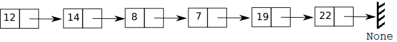
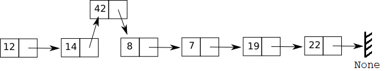

Les deux implémentations classiques¶
En pratique, il y a classiquement deux manières pour implémenter efficacement des listes :
- à l’aide de tableaux (dynamiques) ou
- à l’aide de listes chaînées
Chacune des deux implémentations rend plus ou moins efficaces (au sens de coûteuses) certaines des opérations.
Tableaux (dynamiques)¶
Un tableau est une suite contiguë de cases mémoires (les adresses mémoires se suivent).

Dans le cas d'une implémentation par un tableau dynamique, les éléments de la liste sont stockées dans ces cases mémoires contuguës. Comme un tableau possède une taille fixe, leur utilisation ne permet d'implémenter que des listes dont la taille maximale est définie à l'avance.

Pour pallier à cette limitation, il existe ce qu'on appelle des tableaux dynamiques qui sont des tableaux dont la taille peut varier en fonction des besoins. Une taille est définie au départ, et si le nombre d'éléments de la liste vient à dépasser celle-ci, il faut alors créer un tableau plus grand (le double en général) et y recopier tous les éléments du premier ainsi que la donnée supplémentaire au bon endroit.
Le type
listde Python correspond en fait à un tableau dynamique dans la majorité des implémentations Python. Malgré ce nom ambiguë, il s'agit donc d'un type abstrait beaucoup plus complet que le typeListe.
Coût de quelques opérations
Si une liste L (de $n$ éléments) est implémentée par un tableau, pour insérer un nouvel élément e en position i (opération inserer(L, e, i)) il faut commencer par déplacer tous les éléments à partir de i d'une case vers la droite. Cette opération est coûteuse car dans le pire cas (insertion en tête) il faut déplacer les $n$ éléments de L d'un "cran" vers la droite : le coût est proportionnel à $n$, on parle de complexité $O(n)$.

En revanche, l'accès à un élément en position i (opération lire(L, i)) se fait de manière directe donc est peu coûteuse : elle se fait en temps constant ($O(1)$) car on accède à la case mémoire du tableau contenant l'élément en position i en ajoutant la valeur $i$ à l'adresse mémoire de la première case (cela revient à faire une simple addition).
Listes chaînées¶
L'autre manière classique d'implémenter des listes est d'utiliser ce qu'on appelle des listes chaînées. A la différence d'un tableau, il s'agit d'une représentation non contiguë. En effet, on utilise alors des maillons comportant chacun un élément et une référence au suivant (l'adresse mémoire du suivant), ces maillons pouvant être éloignés les uns des autres en mémoire. Le dernier maillon contient le dernier élément et une référence None vers le suivant puisqu'il n'y a pas.

Il s'agit d'une implémentation récursive d'une liste, qui se rapproche de celle avec des couples.
Coût de quelques opérations
Si une liste L est implémentée par une liste chaînée, l'opération inserer(L, e, i) (et l'opération supprimer(L, i)) est beaucoup moins coûteuse quand l'insertion (la suppression) est proche du début de la liste : il faut atteindre la position i puis insérer un nouveau maillon en jouant sur les références au suivant.

En revanche, comme la structure est récursive, pour accéder à un élément en position i, il faut parcourir la chaîne de maillon en maillon en commençant par le premier. L'opération lire(L, i) est donc coûteuse puisque dans le pire cas (accès au dernier élément), il faut parcourir les $n$ maillons de la liste de proche en proche : la complexité est donc $O(n)$.
Moralité : l'implémentation choisie entraîne des coûts différents pour les opérations sur la structure. Le choix est donc à faire selon le contexte et les besoins algorithmiques.